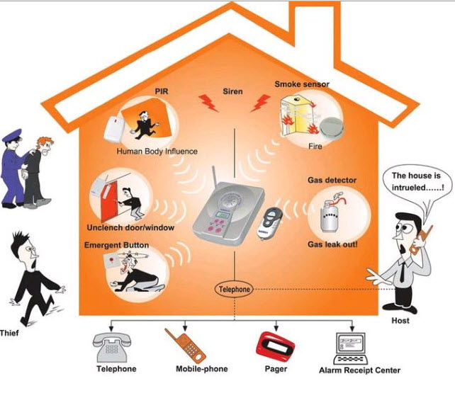

My Projects
Laser Security Alarm System

I built a simple Laser security alarm system using LDR sensor
Netflix Clone
I built a Netflix login page clone by using HTML and CSS.
IOT based air quality monitor system
My project will detect the toxic gas and humidity by using DHT sensor and MQ3
sensor, then it was connected to the cloud, the results will be display Live on my
own Website.